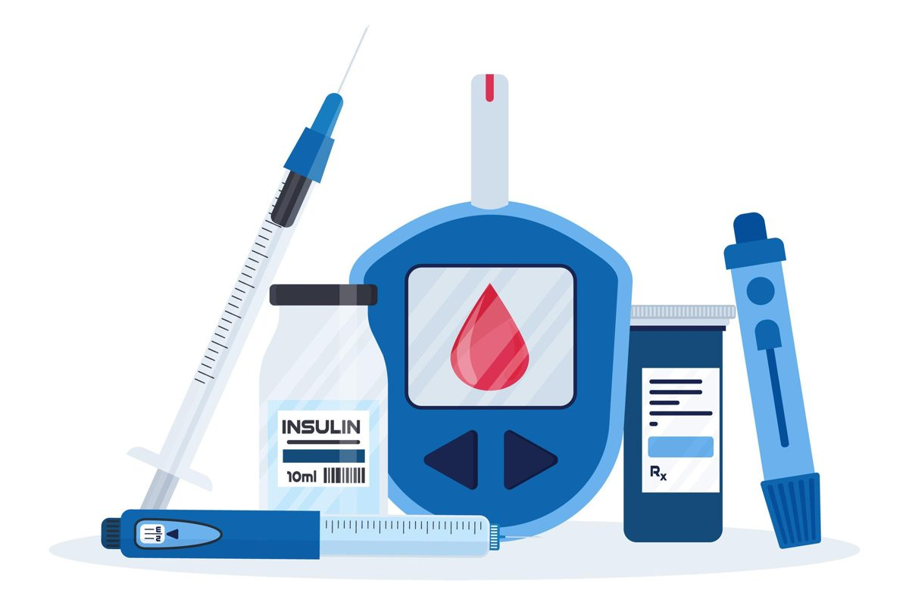
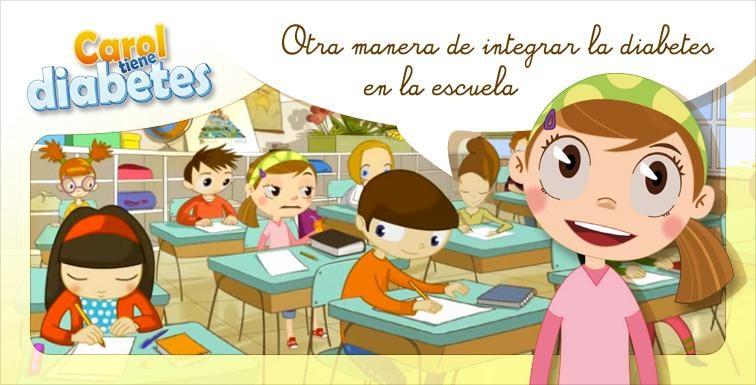

Diabetes infantil: comprender para cuidar
La diabetes es una de las enfermedades crónicas más frecuentes de la infancia. Reconocer a tiempo sus señales, entender cómo se trata y acompañar al niño y a su familia marca la diferencia entre un diagnóstico en crisis y una vida con control y autonomía. Este espacio reúne esa información de forma ordenada, con fuentes verificables.
Empezar a leerQué es la diabetes y cómo afecta al organismo
La diabetes mellitus es un grupo de enfermedades metabólicas cuyo rasgo común es la hiperglucemia, es decir, un exceso de glucosa en la sangre. La glucosa es la principal fuente de energía del cuerpo y llega a la sangre a partir de los alimentos. Para que las células puedan usarla necesitan una hormona, la insulina, que produce el páncreas.
La insulina funciona como una llave: se une a receptores en las células de los músculos, el hígado y la grasa y permite que la glucosa entre. Cuando el páncreas no produce insulina, o el organismo no responde bien a ella, la glucosa se acumula en la sangre y las células quedan sin combustible. Con el tiempo, la hiperglucemia mantenida daña vasos sanguíneos, nervios, riñones y ojos, de ahí la importancia de controlarla desde el inicio.
En la infancia, la causa más frecuente es la destrucción autoinmune de las células beta del páncreas (diabetes tipo 1). También puede aparecer por resistencia a la insulina, sobre todo en adolescentes con exceso de peso (tipo 2), o por causas genéticas poco comunes. Los factores que desencadenan el proceso autoinmune no se conocen del todo y no dependen de la crianza ni de la alimentación del niño, algo que conviene decir a las familias que se sienten culpables.
El diagnóstico oportuno evita que la enfermedad se manifieste por primera vez como cetoacidosis, una complicación grave y prevenible.
Tipos de diabetes en niños
Diabetes tipo 1
Es la forma predominante en pediatría. El sistema inmunitario destruye las células beta y el páncreas deja de producir insulina, por lo que el tratamiento con insulina es indispensable y de por vida. Puede comenzar a cualquier edad, con frecuencia entre los 4 y los 14 años, y los síntomas suelen instalarse en semanas.
Diabetes tipo 2
Se caracteriza por resistencia a la insulina y una producción que con el tiempo resulta insuficiente. Se asocia a obesidad, sedentarismo y antecedentes familiares, y se presenta sobre todo en la pubertad. Puede pasar desapercibida durante años; signos como la acantosis nigricans (piel oscura y aterciopelada en cuello o axilas) deben motivar una evaluación.
Otras formas
Incluyen la diabetes monogénica (como la MODY y la diabetes neonatal), causada por variantes en un solo gen, y la diabetes secundaria a otras condiciones o medicamentos, por ejemplo la relacionada con fibrosis quística. Son poco frecuentes, pero sospecharlas cambia el tratamiento: algunas responden a fármacos orales en lugar de insulina.
Signos y síntomas
Los síntomas clásicos de la hiperglucemia se desarrollan porque el cuerpo intenta eliminar el exceso de glucosa por la orina y no logra aprovechar la que circula.
Aumento de la sed
La pérdida de líquidos por la orina provoca una sed intensa y constante.
Micción frecuente
Orinar muchas veces, o reaparecer la enuresis nocturna en un niño que ya controlaba.
Hambre excesiva
Las células no reciben glucosa y el cuerpo pide más alimento.
Pérdida de peso inexplicable
El organismo consume grasa y músculo como energía alternativa, aunque el niño coma bien.
Cansancio
Fatiga, somnolencia y menor tolerancia al juego o al ejercicio.
Cambios de conducta o rendimiento
Irritabilidad, dificultad para concentrarse o descenso en el desempeño escolar.
Señales de alarma: acudir de inmediato a urgencias
La cetoacidosis diabética ocurre cuando la falta de insulina obliga al cuerpo a producir cetonas en exceso. Es una emergencia médica. Busca atención urgente si, además de los síntomas anteriores, aparece:
- Náuseas, vómitos o dolor abdominal.
- Respiración rápida y profunda.
- Aliento con olor afrutado o a acetona.
- Somnolencia marcada, confusión o dificultad para despertar.
Diagnóstico
El diagnóstico lo establece un profesional de salud a partir de la historia clínica, la exploración física y pruebas de laboratorio. Según los criterios de la American Diabetes Association y la ISPAD, se usan estas pruebas:
Glucemia en sangre. Mide la glucosa en un momento dado, en ayunas, al azar o tras una sobrecarga oral de glucosa. En un niño con síntomas clásicos, una glucemia al azar de 200 mg/dL o más confirma el diagnóstico; en ayunas, el umbral es de 126 mg/dL o más.
Hemoglobina glucosilada (HbA1c). Refleja el promedio de glucosa de los últimos dos o tres meses. Un valor de 6,5 % o más es compatible con diabetes, aunque en la diabetes tipo 1 de inicio rápido puede ser normal, por lo que no debe retrasar el tratamiento.
Pruebas complementarias. Cetonas en sangre u orina, gasometría si hay sospecha de cetoacidosis y autoanticuerpos pancreáticos para distinguir el tipo 1. En casos atípicos puede indicarse estudio genético.
La valoración pediátrica debe incluir la talla, el peso, el desarrollo puberal y los antecedentes familiares. Los valores anteriores son orientativos: solo el médico tratante interpreta los resultados de cada niño.
Tratamiento y cuidados
El objetivo es mantener la glucosa dentro de rangos individualizados, prevenir complicaciones agudas y crónicas y permitir que el niño crezca y se desarrolle con normalidad.
- Insulina
- En la diabetes tipo 1 es imprescindible. Se administra con inyecciones múltiples o con bomba de infusión, y las dosis se ajustan a la ingesta, la glucosa y la actividad. El equipo de salud define el esquema.
- Alimentación equilibrada
- No existe una «dieta de diabético» especial: es una alimentación variada, con frutas, verduras, cereales integrales, proteínas y horarios regulares. Se enseña a contar o estimar los carbohidratos para ajustar la insulina.
- Actividad física
- Se recomienda y mejora el control, pero puede provocar hipoglucemia, por lo que se planifica con la familia y el equipo de salud.
- Monitoreo de glucosa
- Se realiza con glucómetro o con sensores de monitoreo continuo y orienta las decisiones diarias sobre insulina, comida y ejercicio.
- Educación diabetológica
- Es parte del tratamiento. Incluye reconocer y tratar la hipoglucemia, actuar en días de enfermedad y manejar los materiales.
- Acompañamiento familiar y apoyo emocional
- El cuidado diario recae en la familia, y la carga puede ser agotadora. El apoyo psicológico y los grupos de familias ayudan a prevenir el agotamiento y los trastornos del ánimo o de la conducta alimentaria en adolescentes.
- Seguimiento médico
- Controles periódicos con pediatría o endocrinología pediátrica, con revisión de HbA1c, crecimiento y detección temprana de complicaciones.

Diabetes infantil en la vida cotidiana
Escuela
La escuela necesita un plan escrito: cómo medir la glucosa, qué hacer ante una hipoglucemia y a quién llamar. Un niño con diabetes debe poder comer, medirse y ausentarse al baño sin ser expuesto ni cuestionado.
Familia y autonomía
La autonomía se construye por etapas: primero los padres lo hacen todo, luego el niño colabora y, de forma gradual, asume tareas según su edad y madurez, siempre con supervisión de un adulto.
Deporte y vida social
El deporte, los campamentos y las fiestas están al alcance del niño con una buena planificación. En los cumpleaños, el pastel no está prohibido: se calcula la insulina y se comparte la celebración como los demás.

Lo que más protege a un niño con diabetes no es la restricción, sino un entorno que lo entiende y lo incluye.
Recursos multimedia
Video educativo
Enlaces de interés
- Organización Mundial de la SaludHoja informativa sobre diabetes.
- International Diabetes FederationInformación general y tipos de diabetes.
- American Diabetes AssociationDiabetes tipo 1 para familias.
- ISPADSociedad Internacional de Diabetes Pediátrica y Adolescente, con guías clínicas.
- Ministerio de Salud de PanamáSitio oficial del MINSA.
Referencias
- American Diabetes Association Professional Practice Committee. (2025). 14. Children and adolescents: Standards of Care in Diabetes—2025. Diabetes Care, 48(Supplement_1). https://doi.org/10.2337/dc25-S014
- International Diabetes Federation. (2025). IDF Diabetes Atlas (11.ª ed.). https://diabetesatlas.org/
- Libman, I., Haynes, A., Lyons, S., Pradeep, P., Rwagasor, E., Tung, J. Y., Jefferies, C. A., Oram, R. A., Dabelea, D. y Craig, M. E. (2022). ISPAD Clinical Practice Consensus Guidelines 2022: Definition, epidemiology, and classification of diabetes in children and adolescents. Pediatric Diabetes, 23(8), 1160–1174. https://doi.org/10.1111/pedi.13454
- Organización Mundial de la Salud. (s. f.). Diabetes [Hoja informativa]. https://www.who.int/news-room/fact-sheets/detail/diabetes